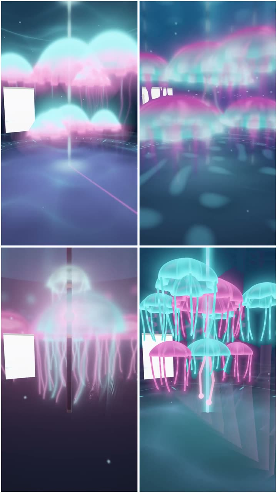

Summary
- Run a round of the same bot at medium thinking effort, against today's high.
- Make medium the default unless it clearly loses. A tie goes to the cheaper room.
- Find where the bad textures come from, then fix them in the library. Water first.
- Add no more instructions to the designer. Keep the five upgrades off.
- Why: in your rankings, more spend per room didn't buy better rooms.
More spend didn't buy better rooms
In rounds 5 to 11 you ranked four rooms a brief. I compared every pair within a brief. The dearer room was the better one 32 times, and the cheaper one 37. Three pairs tied. Pairs from the same version of the bot give the same answer: 10 against 12.
So the spread in spend per room isn't buying beauty you can see. That doesn't prove less thinking is free. A room that happened to think less is not one told to. A round can tell.
Where a room's spend goes
A room from today's bot cost about $0.93 in the tests, over 24 rooms. The bot doesn't log tokens. So this split is my estimate, from cost and code size.
| Part | Size | Cost a room |
|---|---|---|
| The room's own code | About 4K tokens | About $0.08 |
| The prompt: examples and library guide | About 29K tokens | $0.01 to $0.23, cached |
| The rest: thinking, and fix rounds | Most of it | About $0.60 to $0.85 |
The designer thinks at high effort today. The bot built 12 to 18 rooms a day on 2 and 3 November. At the test cost, design runs about $11 to $17 a day. If medium halved the thinking, a room would cost about $0.57. That saves about $4 to $6 a day.
Recommendation 1: test less thinking
Run one round: today's bot at medium effort against high. Same examples, same library, two rooms each, on two briefs. The round also logs each room's code size and its fix rounds.
Make medium the default unless it clearly loses. Clearly means this: high has the best room in both briefs, and medium the worst. Luck alone does that about one time in nine. The rule leans toward medium on purpose. Tokens are half the measure, so a tie goes to the cheaper room.
One thing to watch. Longer room code did place a little better: 41 pairs against 28. That fits your "detail". If medium writes much shorter rooms, that is the risk.
Recommendation 2: fix textures at the source
You said what separated the rooms. The bad ones had pixelated textures, or artificial ones. The best had natural textures, and water was the clearest case.

The first step costs no tokens. An agent goes through your worst rooms and finds each bad texture's source. Some will be the designer's own code, and some the library's. A fault in the library gets fixed once, for every room. A texture the designer keeps writing badly becomes a library part instead.
Then test it where it matters. Water goes first, on two briefs with water in them. If no room with the new water places first, stop the texture work.
A library part isn't quite free. It adds a few lines to the cached guide, and some drawing time. Both are small next to a room's thinking.
The objection: materials were textures too
Materials lost round 8. The swatches looked good on spheres, but the designer used them badly in rooms. Making textures one at a time doesn't fix that on its own. So each new part is judged in rooms you rank, not on test shapes. It is also why the audit comes first. A fix to a texture rooms already use needs no new choice from the designer.
What the rounds settled
Only one change has raised beauty per token so far: the room library. In round 5 its rooms took three of your top four places. They cost about the same. Your favourites as examples split round 3, one each.
| Upgrade | Place against the library | Cost a room against the library |
|---|---|---|
| Light moods | Same | −$0.15 |
| Materials | 1.5 places worse | −$0.53 |
| Critique loop | Same | +$0.28 |
| Finishing | 0.5 places worse | +$0.13 |
| Composition | 0.5 places worse | +$0.19 |
No upgrade raised your places. Cost gaps this size are mostly chance, except the critique loop's extra calls. Light moods tied on place and cost a little less. They earn a retest later, only for scenes with no light of their own.
What it costs
- The effort round: $6 to $9 in test rooms, judged on your phone.
- The texture audit: about two agent-hours, no test rooms.
- Water: about four agent-hours, then a round of $6 to $9.
The effort round and the audit can start together.
Glossary
- Beauty per token
- How much you like a room, for what it cost the model to make.
- Brief
- The bot's description of the room someone asked for. The designer works from it.
- Cached
- A prompt the model saw recently costs a fraction to read again.
- Critique loop
- The model looks at pictures of its own room, then fixes one thing.
- Designer
- The part of the bot that turns a brief into a room's code.
- Effort
- A setting for how long the model thinks before it answers.
- Examples
- Finished rooms shown to the designer as models to learn from.
- Fix round
- A room's code fails to compile, so the designer gets the error and tries again.
- Room library
- Shared drawing code that every bot room includes, instead of writing its own.
- Round
- Two briefs, each drawn four times, half with a change. You rank each set blind.
- Thinking
- Text the model writes for itself before its answer. It is paid for like output.
- Token
- A piece of a word. Models read and write in tokens.